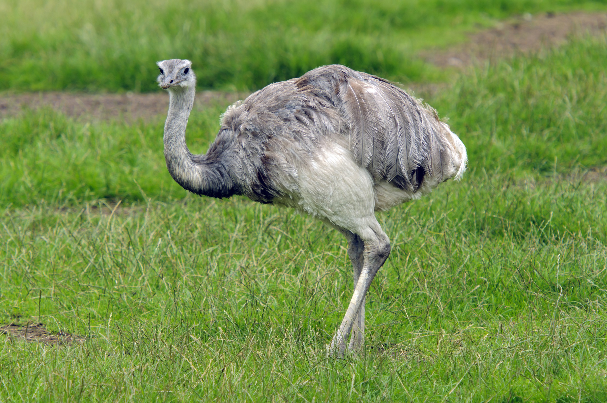

Notícias Cerrado
Flora
O bioma possui rica biodiversidade de flora, são mais de 2000 mil espécies de plantas, catalogadas pela Embrapa - Brasil, com presença de arbustos, árvores e plantas aquáticas, e floresta densa e fechada. Há destaque para as espécies camalote-da-meia-noite e vitória-régia. Há nessa flora diversas espécies endêmicas, ou seja, que só existem naquelas condições ambientais.
A importante flora do centro-oeste do nosso pais:
Pequi

Pequi (Caryocar brasiliense), também chamado de pequizeiro, é uma árvore da família das cariocaráceas nativa do cerrado brasileiro...
Veja maisBuriti

O “Buriti” é uma palmeira aquática, que ocorre nas veredas do cerrado brasileiro. Veredas são constituídas de um brejo graminoso herbáceo, em fundo de vale ao longo, de mata de galeria com buritis...
veja maisIpê Amarelo

Ipê-amarelo-flor-de-algodão (Handroanthus serratifolius) é uma espécie de árvore do gênero Handroanthus...
Veja maisMundo
-

Entrevista com Marcelo Kuhlmann
O biólogo e doutor em botânica pela Universidade de Brasília...
-

Ema
A ema (Rhea americana), também conhecida como nandu, nandu-comum...
-

Capivara
A capivara ou capincho (nome científico: Hydrochoerus hydrochae...
-

Onça-Pintada
A onça-pintada (português brasileiro) ou jaguar (português europeu) (...